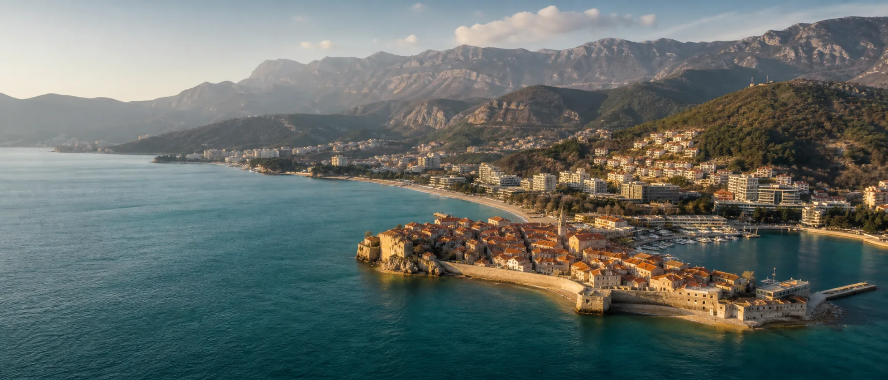
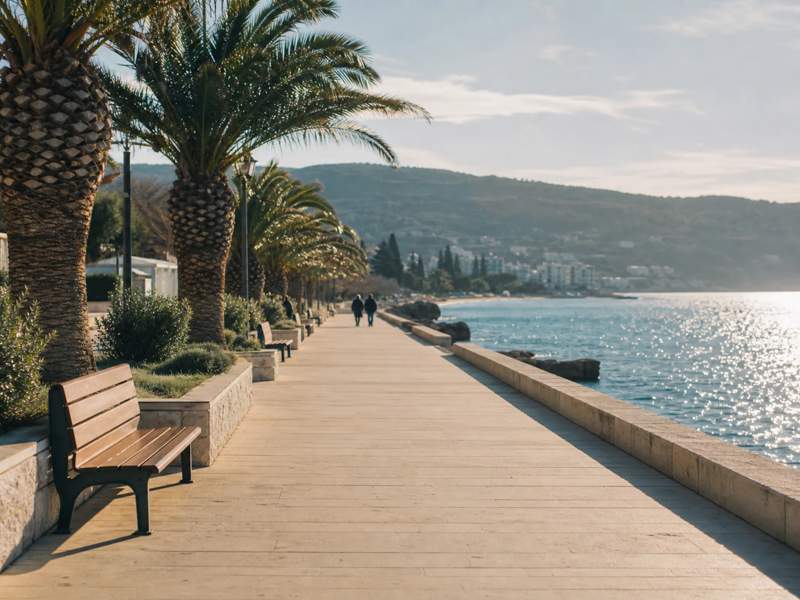
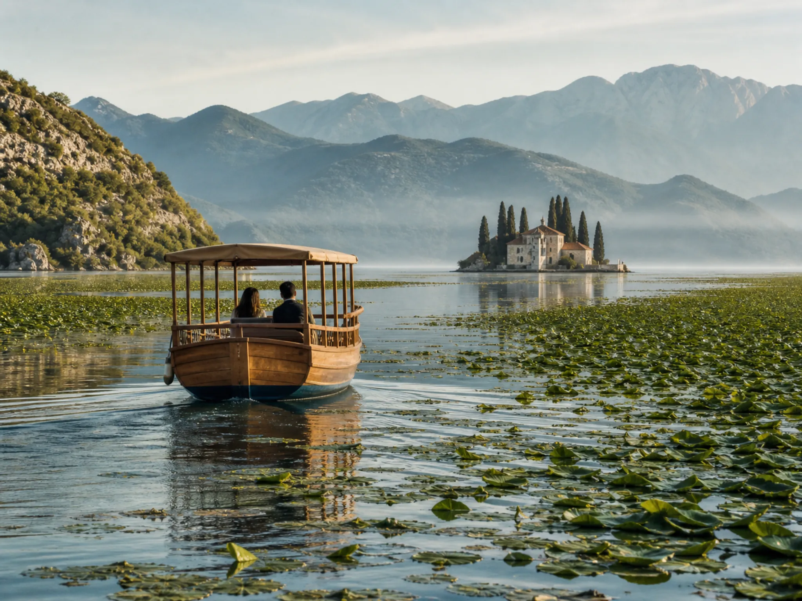
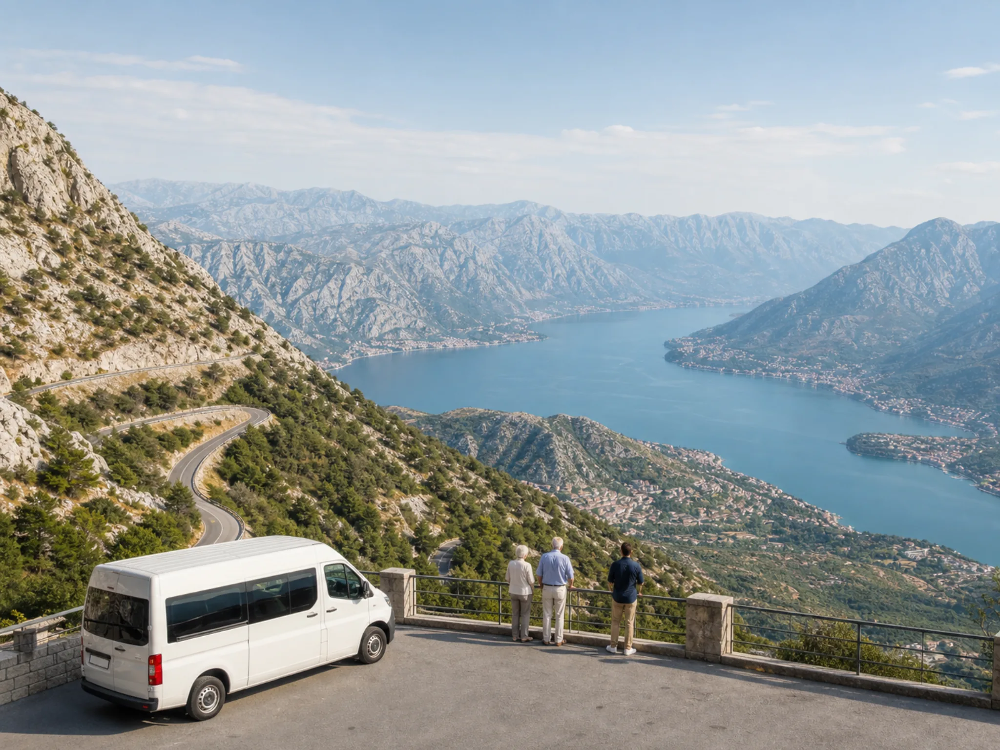
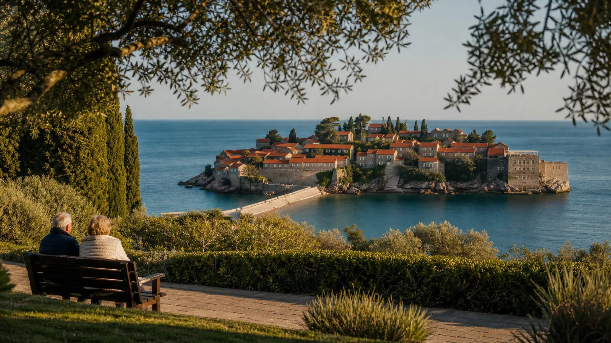
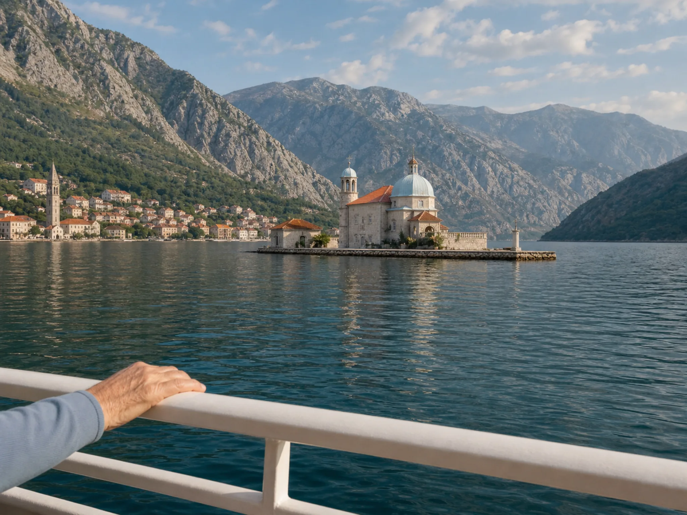
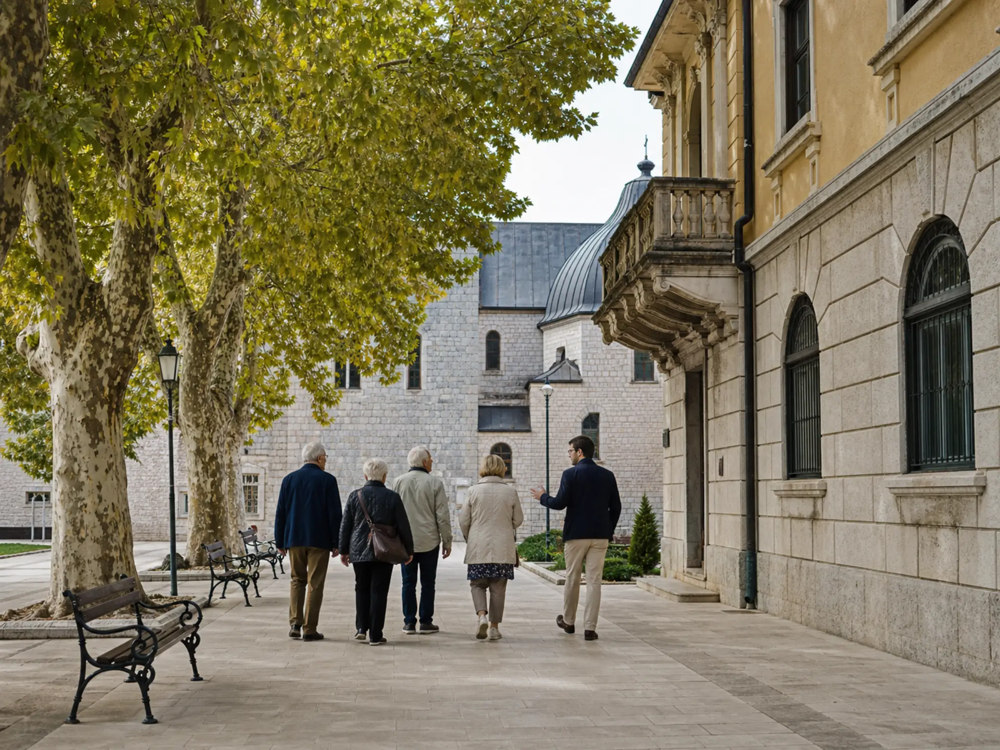
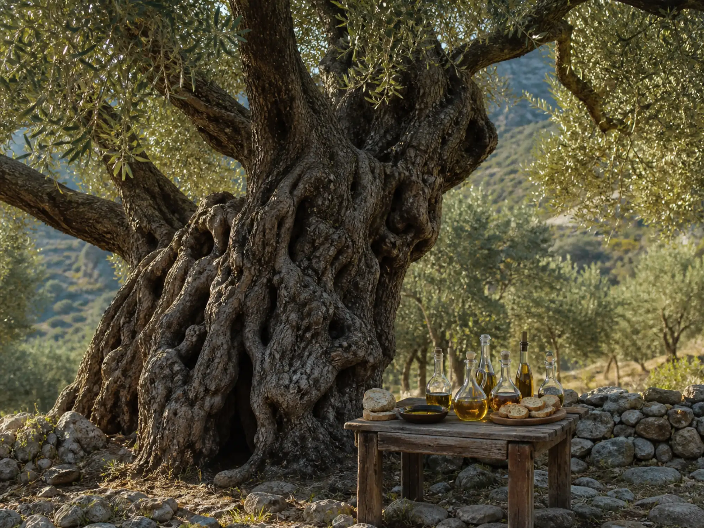

Der Standort
Zwischen Meer und Bergen liegt eines der mildesten Klimata Europas: rund 240 Sonnentage im Jahr, Winter ohne Frost, Sommer mit kühlem Hinterland. Dazu kurze Wege, europäische Standards und eine Landschaft, die zum täglichen Spazierengehen einlädt — die Grundlage unseres Klimaprogramms.

Klima & Temperaturen
Budva liegt in der subtropisch-mediterranen Zone: Der kälteste Monat bleibt im zweistelligen Plusbereich, das Meer speichert die Sommerwärme bis in den November. Hervorgehoben: die Nebensaison mit Saisonindex 0,50.
| Monat | Luft, Tageshoch | Meer | Sonnenstunden / Tag | Saisonindex |
|---|---|---|---|---|
| Januar | 12 °C | 15 °C | 4 | 0,50 |
| Februar | 13 °C | 14 °C | 5 | 0,50 |
| März | 15 °C | 14 °C | 6 | 0,50 |
| April | 18 °C | 16 °C | 7 | 0,50 |
| Mai | 22 °C | 19 °C | 9 | 0,90 |
| Juni | 26 °C | 23 °C | 10 | 0,90 |
| Juli | 29 °C | 25 °C | 11 | 0,90 |
| August | 29 °C | 26 °C | 10 | 0,90 |
| September | 26 °C | 23 °C | 8 | 0,90 |
| Oktober | 21 °C | 20 °C | 6 | 0,50 |
| November | 17 °C | 18 °C | 4 | 0,50 |
| Dezember | 13 °C | 16 °C | 3 | 0,50 |
Langjährige Mittelwerte für Budva (Quellen: nationale Wetterdienste). Für Bewohner mit Herz-Kreislauf- und Atemwegserkrankungen sind besonders die frost- und schwülefreien Übergangsmonate wertvoll: stabile Luftfeuchtigkeit, wenig Wind, hohe Zahl an Tageslichtstunden gegenüber Mittel- und Nordeuropa.
Drei Klimazonen

Küste · 0–100 m
Milde Winter, lange Übergangszeiten, Meeresluft mit Salz- und Pinienaroma. Hier liegt die Residenz — das Basisklima für Überwinterung und Frühjahrsmobilisierung.

Seenland · 6–40 m
Der größte See des Balkans, eine Autostunde entfernt: stilles Wasser, Vogelwelt, Bootsfahrten ohne Anstrengung — das beliebteste Ausflugsziel unserer Gäste in der Übergangszeit.

Berge · 900–1.700 m
Wenn der Hochsommer an der Küste zu warm wird: kühle Bergluft in 40 Minuten Fahrt. Panoramastraßen erlauben Höhenerlebnis ganz ohne Wandern — der Bus fährt bis zum Aussichtspunkt.
Tägliche Spaziergänge
Vom Jachthafen bis zum Strand von Bečići führt eine ebene, gepflasterte Uferpromenade — ideal für das tägliche Gehprogramm in Begleitung, mit Cafés und Ruhepunkten alle 200 Meter.
Venezianische Gassen, kleine Plätze, die Zitadelle mit Blick auf das Meer. Kompakt genug für einen Vormittag; unsere Betreuer kennen die stufenarmen Routen.
Zypressen- und Olivenalleen des ehemaligen königlichen Sommersitzes, dazu der berühmteste Fotoblick des Landes: die Inselfestung Sveti Stefan — vom Aussichtspunkt, ohne Abstieg.
Teil des Klimaprogramms: betreute Bewegung im Freien bei Meeresluft — im Winter in der Vormittagssonne, im Sommer früh am Morgen vor der Wärme.

Ausflüge im Land
Jeder Ausflug ist nach denselben Regeln organisiert: klimatisierter Kleinbus bis zum Ziel, maximal 300 Meter Gehstrecke, Sitzgelegenheiten unterwegs, medizinisch geschulte Begleitung und Rückkehr zur Mittagsruhe oder zum frühen Abend.

Halbtag · Bootsfahrt · UNESCO
Fjordartige Landschaft vom Wasser aus: Perast, die Wallfahrtsinsel Gospa od Škrpjela und die venezianische Altstadt von Kotor — das Boot legt direkt an der Uferpromenade an.
Halbtag · Boot & Verkostung
Stille Bootsfahrt zwischen Seerosenfeldern und Klosterinseln, danach Kostprobe montenegrinischer Weine und Honige auf einem Familiengut — alles ebenerdig.

Halbtag · Panoramafahrt
Die historische Hauptstadt mit Kloster, Königspalast und Museen — dazu die Serpentinenstraße mit Blick über die gesamte Bucht. Kulturprogramm ohne lange Fußwege.

Ganztag · Süden · Olivengärten
Der älteste Olivenbaum Europas (über 2.000 Jahre), Olivenöl-Verkostung und die langen Sandstrände des Südens — ein Ausflug für die wärmeren Monate der Übergangszeit.
Praktisch
Mehr entdecken
Gesundheit & Aktivität
Vom Morgenprogramm am Wasser bis zu ebenen Seerundwegen in den Nationalparks — Bewegung im Tempo Ihrer Bewohner.
Seite öffnen →Pilgerreisen
Ostrog, Cetinje, Reževići — begleitete Besuche mit Teilnahme an der Liturgie nach Wunsch und Kräften.
Seite öffnen →Ausflüge
Acht kuratierte Routen mit lizenzierten Guides — vom Boot in der Bucht bis zur Panoramastraße im Nationalpark.
Seite öffnen →Nachbarländer
Tagesausflüge über die Grenze und sanfte Mehrtagesreisen — mit demselben Seniorenstandard wie zu Hause.
Seite öffnen →Nächster Schritt
Fordern Sie eine Kalkulation für einen Pilotturnus an — mit Preisen je Pflegegrad und einem Saisonvorschlag, der zum Klimaprofil Ihrer Bewohner passt.
Angebot anfordern